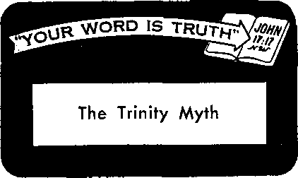

JUNE 22, 1955 SEMIMONTHLY
THE MISSION OF THIS JOURNAL
News sources that are able to keep you awake to the vital issues of our times must be unfettered by censorship and » elfish Interests. “Awakei” has no fetters. It recognizes facts, faces facts, is free to publish facts. It is not bound by political ambitions or obligations; it Is unhampered by advertisers whose toes must not be trodden on; it is unprejudiced by traditional creeds. This Journal keeps Itself free that it may speak freely to you. But it does not abuse its freedom. It maintains integrity to truth.
"Awake I” uses the regular news channels, but is not dependent on them. Its own correspondents are on all continents, in scores of nations. From the four comers of the earth their uncensored, cn -the - scenes reports come to you through these columns. This Journal's viewpoint is not narrow, but is international. It is read in many nations, in many languages, by persons of all ages. Through Its pages many fields of knowledge pass in review—government, commerce, religion, history, geography, science, social conditions, natural wonders—why, its coverage Is as Broad as the earth and as high as the heavens.
“Awake I” pledges itself to righteous principles, to exposing hidden foes and subtle dangers, to championing freedom for all, to comforting mourners and strengthening those disheartened by the failures of a delinquent world, reflecting sure hope for the establishment of a righteous New World.
Get acquainted with “Awake!” Keep awake by reading “Awake;”
rt SLISHED SCMIHOKnn.T Hr
WATCHTOWE’-t B1BI.E AN® TRACT SOCIETY. INC.
117 Adam# Street Braoklja 1. N. Y., U.S.A.
J.', II. n.'JOkn, Giiast Scum, fccrela-v
>*riM1no IHUt: 1,46C.000
Elva casta a copy
tiHoai*** la vhlek Ikli nuoirlw I< yWI.M*. HeClmetrN; Afritmet, Flnrriti . FnT.'ti.
(kmr, HpIIumIhIi. XurJtfcij
— l>thLv\ Gratis.
OT.-k itarijf A’Umprirt; rule
Affintft, 0,4., ’ 1 r s*.. B"k0;Vi! i, X Y. fl A«$1rtfh. <1 BejYttird to , S’>.w. J?/.
Cut Ma, 4<! Irvin Are . Tcfcntj' b, U’.'rii I: EM It Rd, H Crmii Terrien. IzrCri, W 2 '/ Mm ZealaM. G P 0 B'x P. Wdll^ftca. C ? 7/-
Alita, Private Bat, Kandifi.ri>Jp. Tri ;y.
Rmltttom vnf 1« cJfce la pmr oh*
ijj it torip'itrct! with rtiMladCM tn cubtro* -»f* |<x crj *f Jt-nS?tan:c* mt at
Br.vkM fr>tn where r.o v.Tkt is
by InterM'Wa: r<rej «rder ivly th&wfclb
In ■uffe-mt totmirH nrr here 6tati*i in l>*ai ftvrerey itallii of ispbotiri ivritt blink L« •'tv nt irivt ian laws befcre autvrrtnta et
Umh of veal ft xr <<J<
■tv be ci period ctTocUvc otic v^nth herd jr*1 I'M rd' an ii*Ti
KiilrH a;; fzrond clMn Mutter 4| Bnrtdim NY. Ac >>f Hatch 3 rrivirt Im V R a
CONTENTS
Jehovah’s Witnesses Recognized
Less Hours, More Work. G neater Output 15 And He Lived!
‘Your Word Is Truth"
Jehovah's Witnesses Preach in All
United States Supreme Court rates that they are such under the Selective Service laws
ON March 14 of this year the Supreme Court of the United States handed down decisions on four cases involving Jehovah’s witnesses. All four cases concerned the status of Jehovah’s witnesses under the Selective Service Regulations pertaining to mili tary service. Three of the cases were decided in favor of the witnesses, one decision was adverse. The classification of conscientious objector was the issue in each of the cases.
Hayden C. Covington argued before the court on behalf of Jehovah’s witnesses. He is the legal counsel for the Watch Tower Society, the legal agency that acts for Jehovah’s witnesses. For the government different attorneys from the department of justice handled the cases. Oral argument was presented to the Court on February 1 and 2, 1955. The principal points at issue and the high lights of the Court’s decision in each of the cases are presented in the fallowing summaries.
Anthony Sicurella has been identified with Jehovah’s witnesses since he was six years old. Ordained when seventeen, he has served as a minister of this religious group for many years. But the draft board rejected his claim as a conscientious objector and classified him 1-A, subject to induction in the armed forces. He appealed. He was investigated by the Federal Bureau of Investigation, and its report was favorable to Sicurella. The, hearing officer of the Department of Justice found him sincere and recommended that he be given the conscientious objector classification, but the department ignored this and advised the appeal board to deny his claim because he “failed to establish that he is opposed to war in any form,” since he believes in selfdefense and the defense of his brothers and the ministry. The appeal board, followed, the advice of the department and denied the classification; Sicurella was called up for induction and, when he refused to enter the army, the case went, to court, eventually reaching the Supreme Court.
Since it is admitted that Sicurella is associated with a religion ’hat holds conscientious objection to participating in the wars of the nations, that he sincerely shares these beliefs, and that they are based upon the Bible and his belief in a Supreme Being, there is no basis in fact for the denial of the conscientious objector claim, and for the boards to deny it was arbitrary, capricious and contrary to the law. Nor is his claim properly invalidated by his belief in self-defense. That is something quite different from participation in wars among nations.
These points were threshed out in the lower courts, but when the case reached the Supreme Court the Department of Justice injected an entirely new issue into the case, speculating that the claim was denied because Jehovah’s witnesses believe in theocratic war, and hence they are not opposed to war in any form. By theocratic war the witnesses mean the wars that Israel long ago fought at Jehovah’s direction, or wars that Jehovah’s invisible hosts fight, such as the impending war of Armageddon. Covington hit this maneuver hard in his reply brief and in oral argument before the court, and actually the door was opened to give a broad and sweeping witness concerning Jehovah and Christ and the impending battle of Armageddon. The government tried to show that if Sicurella and the witnesses were in favor of theocratic or God-commanded wars they might conceivably favor some of the wars among the nations, and suggested as examples the Crusades. But certainly Jehovah’s witnesses do not view such cruel and barbaric massacres by false religionists as God-directed; rather they were Satan-inspired. No theocratic wars have been fought since Israel’s time centuries before Christ, nor will be again until Armageddon, and in this impending cataclysm Jehovah’s visible servants on earth will not physically fight. So the government’s arguments were founded on speculation and imagination.
The high court was not drawn off into such mental meanderings. Its decision, written by Justice Clark and joined in by Chief Justice Warren and Justices Black, Douglas, Frankfurter and Burton, stated: “Throughout his selective service form, petitioner emphasized that the weapons of his warfare were spiritual, not Carnal. He asserted that he was a soldier in the Army of Jesus Christ and that ‘the war weapons of the soldier of Jesus Christ are not carnal.’ With reference to the defense of his ministry, his brethren and Kingdom interests, he asserted that ‘we do not arm ourselves or carry carnal weapons. ... I do not use weapons of warfare in defense . . . of Kingdom interests . . .’ In letters to the local Board he reiterated these beliefs. On their face, these statements make it clear that petitioner’s defense of ‘Kingdom interests’ has neither the bark nor the bite of war as we unfortunately know it today. It is difficult for us to believe that the Congress had in mind this type of activity when it said the thrust of conscientious objection must go to ‘participation in war in any form.’ ”
But the government urged that Sicurel-la’s statements must be taken in the light of the teachings of Jehovah’s witnesses, and so they submitted articles published by the witnesses showing that they are not pacifists, inasmuch as they do not oppose theocratic wars. In this connection the Supreme Court said: “Granting that these articles picture Jehovah’s witnesses as antipacifists, extolling the ancient wars of the Israelites and ready to engage in a ‘theocratic war’ if Jehovah so commands them, and granting that the Jehovah’s witnesses will fight at Armageddon, we do not fee! this is enough. The test is not whether the registrant is opposed to all war, but whether he is opposed, on religious grounds, to participation in war. As to theocratic war, petitioner’s willingness to fight on the orders of Jehovah is tempered by the fact that so far as we know, their history records no such command since Biblical times and their theology does not appear to contemplate one in the future. And although the Jehovah’s witnesses may fight in the Armageddon, we are not able to stretch our imagination to the point of believing that the yardstick of the Congress includes within its measure such spiritual wars between the powers of good and evil where the Jehovah’s witnesses, if they participate, will do so without carnal weapons. We believe that Congress had in mind real shooting wars when it referred to participation in war in any form—actual military conflicts between nations of the earth in our time—wars with bombs and bullets, tanks, planes and rockets. We believe the reasoning of the Government in denying petitioner’s claim is so far removed from any possible congressional intent that it is erroneous as a matter of law.”
So the Supreme Court reversed the court below that had found Sicurella guilty. This is a sweeping decision. It means that, not just Sicurella, but everyone that sincerely holds the beliefs of Jehovah’s witnesses is a conscientious objector under the Selective Service law. But they must prove and demonstrate their sincerity by knowing the teachings and preaching them and living up to them.
Joe Gonzales was reared in the Catholic faith, but severed connections with it at least by 1948, when he married one of Jehovah’s witnesses. In 1949 he became active as one of Jehovah’s witnesses, and was ordained in February of 1950, one month after he registered under the selective service laws. Later that year he became a pioneer or full-time minister, doing his ministerial work during the day and working forty hours a week on a night shift at a steel plant. All this time he
was in a deferred classification because of dependents, though he had also filed his claims as a minister and a conscientious objector. Then in 1952 he was reclassified 1-A. His appeals brought no correction. The hearing officer noted that his sincerity was not questioned, and said he was a sincere witness for Jehovah and as such was a conscientious objector. Yet he recommended denial of this claim, and the Department of Justice recommended denial of it to the appeal board, doubting his sincerity because he “became a member of the Jehovah’s witness sect one month after his Selective Service System registration.”
In oral argument before the Supreme Court Covington hit hard the government’s contention that Gonzales was not a sincere conscientious objector because he was a new convert. Actually, Gonzales was an active minister, though unordained, months before registration, and after registration and classification in a deferred status, when he was in no danger of induction, he became ordained and a full-time pioneer minister, so sincere that he devoted a hundred hours a month to actual preaching, and this in addition to holding down a forty-hour-a-week job in a steel plant. Then about two years later he is changed to 1-A, and the Department of Justice advises the appeal board that the man is too new a convert to be sincere and his claims should be denied for this reason. But that is not the worst of it. Gonzales was not informed of this completely new objection to his claim and as a result was unable to reply to the charge of insincerity, a charge never raised by the local board, who never questioned his sincerity at all. Yet the appeal board, on advice of the Department of Justice, tried him behind his back on the charge of insincerity and convicted him. This unfair and unjust action was vigorously attacked by Covington before the Supreme Court.
And the justices took issue with the government attorney on this point. Chief Justice Warren wanted to know if the newness of a convert precluded sincerity. When government counsel said Gonzales was slow starting his preaching activity, one of the justices asked what the usual speed of conversion was, and he could not say, showing he had no criterion to go on in judging Gonzales too slow in changing from Catholic to one of Jehovah’s witnesses. When one becomes a Catholic convert he is not immediately ordained a priest, is he? And if Gonzales was only trying to dodge the draft in claiming to be a conscientious objector, why change to an unpopular minority religion like Jehovah’s witnesses, where prejudice would act against him? Would it not be more logical to remain with the powerful and influential Catholic organization and claim conscientious objection? Individual Catholics can do this, and without battling the prejudice that confronts Jehovah’s witnesses. The government tried to argue that Gonzales could have the local board reopen his case after the appeal board’s rejection of his claim, and then he could argue the new charge of insincerity. But the Supreme Court, in its decision in favor of Gonzales, ruled: “We believe these remedies to be too little too late.” And in condemning the failure to give Gonzales a copy of the Department of Justice’s recommendation to the appeal board, the majority decision,' written by Justice Clark and concurred in by Chief
Justice Warren and Justices Douglas, Black and Frankfurter, said:
“The facts here underscore this necessity. The Department in its recommendation emphasizes that the petitioner was of a Catholic family and concluded that petitioner’s ‘affiliation with [Jehovah’s witnesses] has been too recent and too closely related to his draft status to warrant the acceptance of his conscientious objector position as genuine. The fact that registrant became a member of the Jehovah’s witnesses sect one month after his . . . registration . . , lends weight to this conclusion.’ But petitioner contends he was a member of the Witnesses before he registered, and there is testimony that he had not been of the Catholic belief since 1948. Nor was this facet of the case explored at the Department of Justice hearing. If petitioner had been afforded a copy of the recommendation, he might have successfully contradicted the basis of the Department’s conclusion or diminished the forcefulness of its thrust. The record also discloses that the local Board apparently placed little emphasis on the lateness of petitioner’s conversion, inquiring instead about the tenets of the sect and petitioner’s employment in the steel plant. On agpeal, it was logical for petitioner to direct his attention to these matters. But the Department of Justice based its rejection of his claim on the proximity of petitioner’s conversion to his registration for the draft, a contention of which he had no knowledge and no opportunity to meet. The petitioner was entitled to know the thrust of the Department’s recommendation so he could muster his facts and arguments to meet its contentions.”
When Robert Simmons registered he was not one of Jehovah’s witnesses and was given 1-A. This was in 1948. He later married and was given a dependency deferment, which ended in October, 1951, when he was again put in 1-A. But in 1949 he began studying with Jehovah's witnesses, in 1950 he became an active preacher, and in October of 1951 he was ordained. Hence he put in his claims as a minister and a conscientious objector. Both claims were denied and appeal brought no relief. The denial of the conscientious objector claim was arbitrary and capricious, because the claim was properly made in good faith and was based upon belief in the Supreme Being. No evidence in the file disputed these essentials. But the main issue in the case is the fact that when before the hearing officer he was denied a fair summary of the unfavorable evidence in the FBI file on him.
The file contained reports that before his conversion he had been "a rather heavy drinker and crap shooter in and around local taverns and pool halls,” and there were claims that he was a wife-beater. None of this was at issue as far as Simmons knew. At the hearing he was asked whether he still hung around pool halls, and answered no and asked what other unfavorable evidence was in the FBI file. The hearing officer evaded, and merely asked his wife how he was treating her, and she answered, “Fine.” Actually, it is a testimony to Simmons’ sincerity that he abandoned such conduct since his conversion, and the hearing officer acknowledged his sincerity. In argument before the Supreme Court, Covington showed this and also attacked the unfairness of not revealing to Simmons the charges against him in the FBI report so that he could defend himself against them, some of which were based only on hearsay. Also with much animation and force he showed how ridiculous it was for the trial court to quash a subpoena for producing the FBI report in court so the Judge could tell whether a fair resume had been given by the hearing officer's vague queries and hints. A fair resume of unfavorable evidence is required for the registrant, but if the file that is summarized is not examined how can anyone know the resume is fair? It is about as ridiculous as trying to judge whether a book review is fair without reading the book, Covington declared.
The government attorney said Simmons failed to qualify as a conscientious objector because his conversion came too near pressure from the draft and also because he beat his wife. Yet his conversion began three years before his reclassification in 1-A, and there is no evidence of wifebeating since his conversion. He changed for the better. There was no evidence proving insincerity, and no charge of insincerity by the local board or the hearing officer. And one of the Supreme Court justices remarked that wife-beating was irrelevant to the issue of conscientious objection.
On the key issue of providing a fair resume, the Court’s decision in favor of Simmons (again written by Justice Clark and joined in by Chief Justice Warren and Justices Douglas, Black, Frankfurter and Burton) stated: “That petitioner never received a fair resume of the unfavorable evidence gleaned by the FBI seems hardly arguable on this record. As to his alleged gambling and drinking, the hearing officer merely told petitioner that he was reported to have been hanging around pool rooms. And as to the reported incidents of violence and abuse toward his wife, the hearing officer, in an apparent aside, advanced only the general query to petitioner’s wife, asking her how petitioner was treating her now. A fair resume is one which will permit the registrant to defend against the adverse evidence—to explain it, rebut it, or otherwise detract from its damaging force. The
remarks of the hearing officer at most amounted to vague hints, and these apparently failed to alert petitioner to the dangers ahead. Certainly they afforded him no fair notice of the adverse charges in the report. The Congress, in providing for a hearing, did not intend for it to be conducted on the level of a game of blindman’s buff. The summary was inadequate and the hearing in the Department was therefore lacking in basic fairness.” Since the case was decided on this point, it was unnecessary, the Court said, to rule on the issue of producing the FBI file in trial court for the judge to examine to determine whether a fair summary of adverse evidence had been given the registrant.
Philip Witmer was reared by parents who are Jehovah’s witnesses. When eleven years old he himself began studying their publications. He holds their beliefs and conscientiously objects to participation in the wars of the nations. He publicly preaches the message of Christ’s kingdom. After registration at different times he indicated his claims as a minister and conscientious objector, and also requested deferment because of agricultural employment, indicating that in that way he would contribute to the war effort. There was no evidence in his file invalidating his conscientious objector claim, but it was denied. After his personal appearance before the local board it did not reopen his case and reclassify him, which the regulations require. The hearing officer said he was a sincere and active witness, and recommended that he be classified as a conscientious objector. But the justice department advised that the appeal board deny the claim, since he was willing to contribute to the war effort by farming, and the board followed this advice.
In oral argument before the Supreme Court Covington showed there was no basis in fact in the file for denying the conscientious objector classification, and certainly willingness to farm did not disqualify, as the government expects conscientious objectors to contribute to the war effort in various ways. Abraham Lincoln said farmers contributed in a vital way. The regulations do not rule a man is not a conscientious objector if he indirectly contributes to the war effort. The government favors that, but here they say willingness to do that destroys the man’s claim. They would have him object to participation not only in war but in farming as well! Actually, Witmer’s willingness or unwillingness on this point is irrelevant to his conscientious objector claim, as is the fact that he made other claims for exemption on other grounds. There being no basis in fact in the file for denying the conscientious objector claim should have caused a reversal of Witmer's conviction. Nevertheless, the Court majority ruled there was basis for questioning his sincerity and the conviction stood. Justices Douglas and Black dissented.
These cases got wide publicity in the national press, and the three decided in favor of Jehovah’s witnesses will influence other cases. Upward of two hundred prosecutions awaiting these decisions will be dropped by the government. Many cases pending in the Federal Circuit Courts of Appeals must be reversed by those courts and ordered dismissed because of these rulings. Already the Supreme Court itself, because of its March 14 decisions, on March 28 ordered dismissal of five other prosecutions of Jehovah’s witnesses. It has thus indicated the course for lower courts to follow to ensure Jehovah’s witnesses “equal justice under law.”
and of being '‘begotten of God.” To what do these expressions refer and regarding whom? Can one be a Christian and yet not have experienced these things? Are they indispensable to salvation?
The Bible speaks of being “born again,” “born of God,” a “new birth'
t'S'.v
WO witnesses of Jehovah were preaching from house to house in the drab Williamsburg section of Brooklyn on a Saturday afternoon last February.
At one door a well-dressed Spanish gentleman invited them in, asked them to be seated and at once asked: “Are you born again? Are you born again?” While the spokesman for the two readily answered yes to the question, usually a witness of Jehovah tactfully counters by asking a question himself (even as Jesus did on occasion), such as, “Just what do you understand by being born again?” Or he may proceed to explain to the householder that he is a dedicated Christian minister who has received God’s holy spirit and that one could be such a Christian minister and yet not be born again.
That one could be a dedicated Christian and yet not be born again runs counter not only to the position held by the smaller sects who make an issue out of being born again, but also to the view generally held in Christendom. According to most Bible commentaries, such as the Interpreter’s Bible, being born again is synonymous with being a sincere Christian. Who are born again? How? And why? How can one tell whether he is born again or not?
As a human creature Christ Jesus was first born of Mary and laid in a manger at Bethlehem. And when was he born again? At the Jordan, at which time he said: “Look! I am come to do your [God’s] will,’’ giving public testimony thereto by being baptized. There God brought him forth as a spiritual Son by bestowing his holy spirit upon him, it descending in the form of a dove, and by audibly acknowledging him as his Son, even as we read: “This is my Son, the beloved, whom I have approved.”—Hebrews 10:9; Matthew 3:17, New World Trans.
At this time Jesus was given a conditional right to life as a spirit creature in the heavens, dependent upon his proving faithful under test. So for three and a half years “he learned obedience from the things he suffered.” And after his having proved himself faithful "as far as death, yes, death on a torture stake,” “God exalted him to a superior position and kindly gave him the name that is above every other name,” so that now he “is the reflection of [God’s] glory.” So Christ Jesus was the first to be born again. He was born again by God’s spirit operating upon him to give him a conditional right to life in the heavens, heavenly life being the purpose of his being born again, or its goal.—Hebrews 5:8; Philippians 2:8, 9; Hebrews 1:3, New World Trans.
However, it was Jehovah’s will, not only thus to exalt Christ Jesus, but to have a number associated with him, for him to be "the firstborn among many brothers.” Hence since Pentecost others have been born again, for “unless anyone is born again, he cannot see the kingdom of God.” —Romans 8:29; John 3:3, New World Trans.
Since all these are sinners, for them to be bora again they must ‘repent and turn around, something Jesus did not have to do, as he was not a sinner. But that is not enough, for by their own efforts they have no standing before God as Jesus did as a perfect man. They can, however, have such a righteous standing imputed to them by exercising faith in Jesus’ blood that was shed for them. On the basis of their exercising faith in Christ’s blood and dedicating themselves to do God’s will, God declares them righteous and brings them forth or acknowledges them as his spiritual sons with the hope of life in the heavens with Christ.—Acts 3:19; Romans 5:1.
Since this being born again is dependent upon their knowledge of God’s will and purpose toward them as revealed in his Word, and upon the action of God’s spirit upon them,- it is said that these are “born from water and spirit,” the water being a symbol of God’s Word. (John 3:5, 6, New World Trans.; Ephesians 5:26) That the literal water of baptism is not the thing that marks one’s being born again is apparent from Cornelius’ experience. He received God’s holy spirit, thereby being born again as a spiritual son of God, before he was baptized.—Acts, chapter 10.
Being born again brings with it many responsibilities. It requires of one that he “bear witness to the truth” even as Jesus did. It also requires bringing forth “the fruitage of the spirit,” which “is love, joy, peace, longsuffering, kindness, goodness, faith, mildness, self-control.” It also means the avoidance of the practice of sin.—John 18:37; Galatians 5:22, 23; 1 John 3:9, New World Trans.
The Scriptures also speak of those having been born again as “begotten of God,” as having “received a spirit of adoption as sons” and as “a new creation.” Compared with all those eventually gaining salvation these are but, as Jesus calls them, a “little flock,” just the 144,000 that the apostle John saw standing on Mount Zion with Christ Jesus, the 144,000 that were sealed from the twelve tribes of spiritual Israel. —Romans 8:15; Revelation 7:4; 14:1, 3, New World Trans.
Only 144,000 born again and to receive the heavenly reward? Yes. Does that mean that only so few will ever gain salvation? Not at all, for John saw not only 144,000 sealed but also “a great crowd, which no man was able to number, out of all nations and tribes and people and tongues.” These also experience salvation, for they are heard saying: “Salvation we owe to our God, who is seated on the throne, and to the Lamb.” Those born again with Christ Jesus will serve as kings, as priests, as judges and as the seed of Abraham that will bless all the families of the earth, namely, the rest of mankind who will gain salvation, including the great crowd that John saw. Yes, God’s original purpose regarding the earth and man will yet be realized. He will make earth a paradise inhabited with righteous creatures. “The earth shall be full of the knowledge of Jehovah, as the waters cover the sea,” and God “shall wipe away every tear from their eyes; and death shall be no more; neither shall there be mourning, nor crying, nor pain, any more.”—Revelation 7:9, 10, New World Trans.; Isaiah 11:9; Revelation 21:4, Am. Stan. Ver.
That is why those who are born again are described as “a certain firstfruits of his creatures,” indicating that there will also be afterfruits. And since Christ Jesus is “the firstborn among many brothers,” it follows that those faithful servants of God who preceded him would likewise not be among those born again, would not be among those whose destination is the kingdom of heaven. That is why Christ Jesus said that of all those born of women there was none greater than John the Baptist, yet “a person that is a lesser one in the kingdom of the heavens is greater than he is/’ However, all such faithful ones who preceded Christ will not be without their reward, for they will be made “princes in all the earth/’—James 1: IS; Romans 8:29; Matthew 11:11, New World Trans.; Psalm 45:16.
From the fulfillment of such Bible prophecies as those found at Matthew chapter 24, 2 Timothy 3:1-5 and Revelation 11:15-18 we can see that we are living at the “end of the world,” the end of this old wicked system of things, and the beginning of the new system of things or new world. That is why a great crowd has made its appearance now—persons who will survive the destruction of this old world at Armageddon to enter a world of “new heavens and a new earth” in which “righteousness is to dwell,” even as Noah and his family survived the destruction of the antediluvian world to enter a cleansed earth. Into that new earth will come not only the “great crowd” tut also their offspring together with those resurrected from the “memorial tombs,” first and chief of which will be the faithful men of old beginning with Abel and reaching down to John the Baptist.—2 Peter 3:13; Hebrews, chapter 11, New World Trans.
Regarding Jesus, John the Baptist said: “That one must go on increasing, but I must go on decreasing.” Today the number still on earth who have been born again is decreasing while the number of those having earthly hopes is increasing. According to the 1955 Yearbook of Jehovah's Witnesses, there are about 580,498 dedicated Christian ministers of Jehovah but only 17,884 who profess to be of the number born again.—John 3:30, New World Trans.
In the light of all the foregoing, how would you answer if asked, ‘Are you born again?”
JZUte lfou?
Ti? With the advent of summer, along come hordes of mosquitoes. When you go out on a picnic you may notice that mosquites seem to single you out for repeated attacks whereas your friends may appear relatively immune. "How can this be?” you think to yourself. You wonder whether mosquitoes are partial, whether they prefer the flavor of one person’s blood above another’s. This is the way it is: The mosquito settles down to work on the human epidermis. In about two seconds of drilling she has achieved a breakthrough. But since the mosquito cannot reach the veins where blood runs in appetizing quantity, she injects from her salivary glands an irritant that causes blood to rush ,to the scene: then the mosquito goes into reverse and siphons out the blood, drinking her fill. Now not everybody is allergic to this Irritant- Thus Dr. William Bolton, American Medical Association director of health education, says: “Rich and poor alike, everybody gets bitten. It's just that some people don’t react the way others de to the fluid from the mosquito’s salivary glands which she injects to help her draw out blood. This fluid is what causes the itching in some people, but doesn't bother others.” So mosquitoes like not only you, they like everybody.
Quetta Quakes
By “Awoke!" correspondent in Pakistan ’
((/"VUETTA rocked again: 7 killed. Heavy I y^damage to houses.” So read the head- , lines of the Pakistan daily newspaper, Dawn, February 20, 1955. |
To the inhabitants of Quetta this quake called to mind the disastrous earthquake of I May 31, 1935, which quake leveled Quetta in । the early hours of the morning, causing an ' estimated 40,000 persons to lose their lives | and a city to disappear overnight. Now, after twenty years, Quetta and surrounding villages 1 had again been rocked by an earthquake of । almost like intensity.
As if to sound a preliminary warning, the I slumbering city was rudely awakened by a severe tremor at six in the morning on Feb- I ruary 12. Lasting about a minute, this shock , dragged thousands out of bed in a mad scramble to the open places. Described as the worst । in a decade, ten more tremors were felt within fifteen minutes. Note the eyewitness account: | wr “You are rudely awakened on February 19 al 3:48 a.m., by a low, deep rumbling sound I that increases to a mighty roar. Can it be thunder? No, for it is right beneath you. * Can It be—yes, it is the dreaded salt alia, the earthquake! The earth is now quaking all around you—walls shake, windows rattle, । crockery, pictures and mirrors crash to the floor. I
“Your one thought is, get outside, save yourself. All is pitch black. You stumble in the I darkness, your heart pounds. Where is the door? Parents are frantically groping for ’ their children. At iast the door. It opens, it , hasn't jammed, and now you are outside.
“You hear a wailing all over the city. | Screaming women and children are everywhere. Dogs are barking furiously. Small I walls crash around you and you thank God that the buildings themselves still stand. Now I that you are outside you breathe a little more freely even though the tremors still continue. You hastily dash back for a blanket, for at , 5,500 feet Quetta is cold at 4 a.m. You join others sitting around hurriedly lit fires and | talk in low tones, not knowing what may follow. I
"Daylight comes and so we take a quick tour of the city to survey the damage. Shop- I keepers In the main shopping area are busy cleaning up the debris. Work in the main has come to a standstill. Hotels, caf£s and restaurants are heavy losers. Now we enter the bazaar area. Here some houses made of sunbaked mud have collapsed completely. Everywhere are groups of people telling of their miraculous escapes provided by a kind Providence. Allah's name is constantly being invoked and a call goes out to the faithful to assemble and plead with Allah to spare them from further anguish. And wherever you look tents are being erected.”
<[ According to later reports “several villages in the neighborhood of Quetta had been wiped out.” “Relief work by government and other public organizations was immediately undertaken and food was distributed among the poor. Patients in hospitals were taken out of their wards. Outgoing trains were packed with panic-stricken people.” "Prime Minister Mohammed Ali has appealed to the generous public to render assistance to the victims of the recent earthquake in Quetta.” “About twenty-five per cent of the mud houses collapsed in the villages around Quetta. The remaining ones are now absolutely unfit for residential purposes.”
< Many marveled at the small loss of life. This was due, however, to the fact that after the quake of 1935 only buildings of approved earthquake-proof design were allowed to be built. According to a geologist the intensity of this earthquake was severe, eight on the earthquake scale, the one of 1935, nine, the highest intensity being ten, indicating complete destruction.
41, As to the cause of the quake geologists “are of the opinion that the recent tremors around Quetta were caused by stress in the earth’s crust and not by volcanic pressure. The experts said that there were frequent movements in the earth’s crust around Quetta. The shocks were felt when a fault in the rocks gave way resulting in a powerful impact.”
<£ To those understanding Jehovah’s purposes as revealed In his Word, earthquakes, such as this one in Quetta, are but one of the features of the "sign" of Christ’s second presence and the consummation of this wicked system of things, even as foretold by Jesus nineteen centuries ago.—See Matthew 24; Mark 13; Luke 21.
lUR
fl®
??rpHERE is no substitute for hard 1 work,” said Thomas A. Edison.
“Genius,” he said, “is one per cent inspiration and ninety-nine perspiration.” Ready to agree with him is steelmaster Charles M. Schwab, who declared: “Hard work-is the best investment a man can make.” American poet and essayist Emerson spoke out similarly: “The sum of wisdom is that the time is never lost that is devoted to work.” And hard work devoted to the service of the Creator is certainly never
lost. The apostle Paul assures us, saying Always have “plenty to do in the work of the Lord, knowing that your labor is not in vain in connection with the Lord.” “For God is not unrighteous so as to forget your work and the love you showed for his name.” So, hard work still has some high and lofty worthwhile recommendations.
—-1 Corinthians 15:58; Hebrews 6:10, New World Trans.
Work is a friend, not an enemy. Clock watchers, who fear work or doing too much work, seldom work hard enough or long enough. They miss the joy there is in an exhilarating exercise. They labor for the love of money and not for the love of working. Their days usually drag, their work suffers, and they are not really happy. Most of them, in fact, are found to be quite miserable, last to start and first to quit work.
42-HOU wf*S«iW
I?!®!
They do not fMcst^ftihind accepting pay ^m^tor work they have not iWlone. They cannot see that
W^Wj^*' .~this is dishonest. It is taking frppife. money that does not belong to "them. Unfortunately there are as yet no legal ways to punish a “time thief.” He must continue in own misery or rise above it by
^^.making a friend out of work.
To work is to live, and to live is to work. “If anyone does not want to work, neither let him ; eat,” said Paul. To shun ■ . work as a loathsome dis-*
ease is to be ignorant of
#<*{•
its many virtues. A recent survey threw light on an already well - established fact: that man must work if PA he is to be sane-
ty happy. The studyrevealed the status of a group of reiwed^etr, who were without financial troubles, and who could travel and live in-depcndently. of their relatives and friends.
These men found that after just a few months of leisure their lives were entirely blank and empty. “I get1 up in the morning and I have nowhere to go, nothing to do,” said one. Another wrote to an employment agency: “More than anything I want a job, anything, just give me something to do.” Others had mental breakdowns. None were altogether contented with their retired state.—2 Thessalonians 3:10, New World Trans.
The prevalent division between hours of work and hours of play, vacations and retirement, was virtually unknown through-
out the long ages of prefactory history. Anthropologist Melville Herskovits says in support: “The notion of a vacation is unique to our society—that is, the distinction we draw between the expenditure of time and effort in painful activity—‘work’—and that which goes into pleasurable activity, or 'non-work? ” Inventions such as the conveyor belt, production line, the time clock, which have greatly increased the work strain, have in no small degree been responsible for the present division of work hours and play.
The question of “how many hours to work” became urgent in the early factories some 150 years ago, when machines began to set the working tempo. Even as far back as 1562 working conditions were minutely regulated by Jaw. Workers were hired by the year. In fact, the present agitation for an annual wage harks back to the English law of some three hundred and eighty years ago.
However, the years immediately preceding the “industrial revolution” that brought the change-over from home to factory work, from manual to machine labor, were years that gave rise to long hours and hard work. Low wages forced women and children into factories, where they sacrificed more than two thirds of their lives trying to make ends meet. Employers assaulted labor cruelly. Typical of the labor legislation of that time was a law passed in Great Britain in the first decade of the nineteenth century that limited factory working hours of children under nine years to 12 hours a day! William Pitt, prime minister of England, proposed in his Poor Law Bill that children should start work at the age of five. In factories and in mines children worked from 14 to 18 hours a day! Often they slept in the factories or fell asleep beside the machines during working hours. When law provided for a twelve-hour day or a sixty-nine-hour work week, industrialists raised a howl that sounded as if the doom of English industries had come.
In the United States the birth of labor unionism was during an era that marked the decline of labor conditions. The year 1789 saw the forming of the first trade union in the United States, and 1791, the first strike, that of some carpenters who struck for shorter hours and against a reduction of wages. They were not complaining about the 40-hour work week of today. In the beginning of the 1880’s, bakers devoted as many as 112 hours to their trade a week; sewing-machine operators, 93 hours; carpenters and joiners, 72 hours; conductors of street railway, as high as 102 hours; some workers at pig-iron blast furnaces, 84 hours, etc.
Ten years later the situation was considered greatly improved. Missouri still had an 84-hour week for bakers; in Maine there was still a 72-hour week for electricians; for stationary firemen, Wisconsin still had the 14-hour day; dressmakers still worked 70 hours in Illinois; sewing machine operators, 84 hours in Missouri; for keepers in blast furnaces, the 84-hour week was customary in the whole of the United States; iron molders worked 84 hours in Alabama; and coal miners 72 hours in Virginia; pressmen worked 84 hours in North Carolina; railroad brakemen worked 79 hours in Indiana; freight conductors, 84 hours in Maryland; locomotive engineers, 81 hours in Michigan; locomotive firemen, 75 hours in Indiana and Colorado.
Investigating Labor Conditions
Labor pressed for better working conditions. In 1845 the first official investigation of labor conditions was made by a special committee of the Massachusetts legislature. One report showed where, “in the summer season, the work commenced at
5 o’clock A.M., and continued till 7 o’clock P.M., with half an hour lor breakfast and three-quarters of an hour for dinner.” At the Eagle Mills, Griswold, Connecticut, 15 hours was the daily working time. At Paterson, New Jersey, women and children went to work at 4:30 a.m.t and did not quit till 7 p.m. Workers were fined for being found dirty at work or when found washing themselves in the factory. The fine was about half their daily wage. If a worker in a spinning factory became ill and could not find a satisfactory substitute for the day, he often had to pay for the steam that was “unnecessary produced,” which might be as much as half his weekly earnings. Workers were compelled to buy from company-controlled stores at prices far above normal. If they rebelled against this practice they were severely punished.
Work rules were cruel and exacting. The following rules were posted on the wall of a Massachusetts’ factory: “The mill will be put into operation ten minutes before sunrise at all seasons of the year. The gate will be shut ten minutes after sunset. It will be required that every person employed for no certain length of time will be required to give at least four weeks’ notice of intention to leave (sickness, etc.) or forfeit four weeks’ pay. [How anyone could give four weeks’ advance notice of possible sickness challenges intelligence.] Anyone who by negligence or misconduct causes damage to the machinery, or impedes the progress of the work, will be liable to make good the damage for same. Anything tending to impede the progress of manufacturing in working hours, such as unnecessary conversation, reading, eating fruit, etc., must be avoided. . . —[Signed] Amasa Whitney, Winchendon, Massachusetts, July 5, 1830.
It was primarily these conditions that caused unionism to flourish. Workers everywhere began to group together in a concerted effort to better working conditions and lower the hours, The progress of their endeavor is reported to us by Shlakman, who, according to Jaffe Stewart, shows the decline in hours from the beginning of the nineteenth century to the present day. Women worked from 70 to 80 hours a week in the early part of the century. Then at the time of the Civil War the average length of the work week in nonagriculture dropped to 60 and 70 hours. It was lowered again in 1909; the work week in manufacturing industries was some 51 hours. This figure fell rather consistently to 42 hours in 1930; under the influence of the depression a low point of some 35 hours a week was reached in 1934. The present United States Fair Labor Standards Act sets 40 hours as the length of the work week to be paid for at regular rates; time and a half is required to be paid for any hours in excess of 40. Thus in a century and a half the hours of work a week have actually been cut in half.
Less Hours, More Work, Greater Output
At the turn of the last century it was believed that the more hours one worked the greater would be the output. Ernest Abbe in Germany made the first scientific analysis of hours and output and found that “it wasn’t so.” After a certain number of hours, fatigue poisons forced output down, while spoilage and accident rates went up. According to Stuart Chase, Abbe “concluded that 75 per cent of all German factory workers would produce more if they worked fess. In terms of energy and attention they would of course work harder.” Chase says that these initial studies "were abundantly confirmed in World War I, when it was found that women in British munition factories could turn out more shells in eight hours than in ten. A whole new concept of the effects of fatigue on output began to invade industry, and further reduce hours.
Scientific management thus joined tradeunion pressure, and legislature reform, in shortening the work week.”
The classic studies of Mayo and Roethlisberger of the Harvard Business School, in the Hawthorne plant of Western Electric, said Chase, showed that “output was strongly influenced by the feelings of the worker about the job.” A test group of workers*‘‘responded more to the sense of feeling important, than to changes in hours, wages, rest pauses or other working conditions. When they felt that they were being consulted, and were no longer cogs in a vast impersonal pecuniary machine, their output soared!” The survey conducted by the Institute of Human Relations at Yale disclosed that “90 per cent of the workers in the automobile plant analyzed disliked their job, but hung on because of the high pay and security.” Many assembly line workers responded with appreciation when given rotating jobs, which made work more bearable. So management is slowly beginning to recognize that, while man is a “biological machine” designed for work, he nevertheless has feelings that must be reckoned with; that “dead weight production is no longer the goal in mechanized societies, but rather a balance, where the worker performs his duties both in the factory” and at home and in the community.
No one will deny that labor unions have greatly contributed toward better working conditions. Wages have increased, hours have decreased and labor conditions are by far more tolerable. Yet unions are not without fault. While they have been a blessing in some respects, gaining for man greater rights and freedoms, yet they have also been a curse to him by restricting the field of opportunities. Through the closed shop “caste system” arrangement employment is limited, in many fields of industry, to just a few within the caste, making it virtually impossible for youth to gain employment in these places. While seniority rights shield the aged, they expose the rising generation to bitter resentment against a system that does not provide opportunities for the full expression of his abilities, but confines him to a seniority system that moves at a snail’s pace.
So labor unions are not without spot. They have their faults. Corruption in them matches that found in politics, if such is possible. And what man really needs, labor unions cannot provide him. For regardless of their power they cannot stop wars, eliminate crime, disease or death. To attain these goals—a world free of corruption— man must work the works of God. It is His kingdom that guarantees perfect working conditions for all. “Thou openest thine hand, and satisfiest the desire of every living thing.”—Psalm 145:16.
In Bradford, England, last March 5, an eighteen-year-old steeplejack was working atop a seventy-flve-foot factory chimney when falling stonework smashed the scaffolding and sent him hurtling toward the ground. The fall did not kill him, hut he landed stunned in a water tank forty feet below. He did not drown because the falling stonework punctured the tank and allowed the water to drain away. However, firemen arrived just in time to pull him out of the tank before he was killed by the gas that swirled up after the falling stonework also damaged a gas main. Young Harrison’s injuries from his three close calls with death? Shock and three small cuts.
By A*i J" ccrratpondant Jn Ga rm any
WHAT visions the mention of Germany brings to mind! A child thinks of robber knights and defiant-looking castles. An art lover thinks of the birthplaces of old well-known works and their famous masters, of renowned concert halls, of operas, operettas and the music of Beethoven and Mozart. A historian thinks of Charlemagne and the “Holy Roman Empire,” of Martin Luther nailing his theses on the door of the Wittenberg church and of the Diet at Worms where he was forced to answer his charges. A historian also pictures John Huss being sentenced to death and burned at the stake. He thinks of the Thirty Years’ War, and certainly of the first and second world wars and of the even more recent division of Germany and the erection of the iron curtain across this land.
The scenery? It is just as colorful and full of variety as the history is. Between the Baltic Sea on the north and the 9,000-foot peaks of the Bavarian Alps are sand dunes, moors, islands, meadows, small mountain ranges, rivers, inland lakes and famed forests. Truly this is a vacationland of great variety.
Thousands of visitors to Germany this year will be attending the international assembly of Jehovah’s witnesses to be held in Nuremberg, August 10-14. If you will be among them, then this article will tell you something about the country you will visit. However, if you cannot be there, then come along with us anyway on an imaginary trip to some of the places that you might visit.
Entering Germany from the south, you might see the Black Forest near the country’s southwestern tip. Here one railway, the so-called Black Forest railroad, winds its way through more than sixty tunnels between Offenburg and the heights of Triberg. The scenery here changes so often and so abruptly that the eye can hardly keep up with it. Car drivers through this section are especially reminded of the Black Forest Hochstrasse, or high road, that runs the entire length of this section at an altitude of approximately 2,600 feet.
Also here in the south is the lake of Constance (Bodensee), which is one of the most desirable vacation goals in all Germany. Whether you see it for the first time from the highway or from the railway, by day or by night, it will be a memorable experience. The city of Constance gained world fame through the Council of 14141418 where noted reformer John Huss was sentenced to death and burned at the stake.
Farther to the east, but still along Germany’s southern border, are spectacular alpine views. Then, running north from Fuessen is famed Romantische Strasse, or the romantic road. On it you pass through an unending variety of scenery: cities with gabled houses from the Middle Ages, castles, citadels, dreamy-looking market places, and of course 2,000-year-old Augsburg. To the east of the Romantische Strasse is Munich, a Bavarian city named for the monks who founded it during the Middle Ages. This gateway to the grandeur of the Bavarian mountains also is well worth the visitor’s time.
The first settlement at the ancient city of Nuremberg was in the middle of the eleventh century. The towers and the parts of the city walls that still stand stem from the fourteenth and fifteenth centuries. Noted painters, sculptors and the like had their homes here and art prospered. Nuremberg has often been mentioned in recent years, too, for here on the edge of town Hitler erected a monumental structure reminiscent of the insane ideas of Nero. It was to be a witness to the “thousand year” or “everlasting” Reich. A specially built railroad station made it possible to move in more than 100,000 persons daily, then to transport them away again. On the annually held party days formations of troops would march before the “Fuehrer” to receive his commands delivered from a high, stately structure that has 144 imposing pillars.
Here in April of 1939 Hitler proclaimed to the world that the “Party Day of Peace” was to take place on September 2 of that year, but by September the war was under way. Then, on September 30, 1946, as the conquering powers were pronouncing judgment upon the Nazi war criminals in this very city of Nuremberg, nine thousand real peace lovers here met in Christian assembly under the motto “Fearless Against the World Conspiracy.” These persons, Jehovah’s witnesses, whom Hitler had sworn would never leave his concentration camps alive, were at this assembly receiving a small foretaste of the blessings that have since been bestowed upon them and that are yet to come in Jehovah’s new world.
When, in 1953, Jehovah’s witnesses again met on these grounds, the attendance grew to an amazing 55,000. Their third assembly here, to be held August 10-14, will see further public witness given in defiance of the conspiracy against Jehovah God and his King, Christ Jesus. A happy throng of con-ventioners will assemble here for this summer’s most important event.
From Nuremberg these conventioners will travel by train up through Wuerzburg to Frankfort on the Main. In the Middle Ages Frankfort was the place of the election of German kings, and from the sixteenth century it was the coronation site of the emperors. The National Parliament met here in the year 1848-49. Although defeated in her bid to be the nation’s capital, her favorable location has made Frankfort a leading commercial, banking and traffic center.
Frankfort is only a short distance from Mainz, a city long-famed for its mighty cathedral. But the cathedral now stands in ruins and the debris of what is left, plus the little that has been rebuilt, presents a gloomy picture of despair. Mainz was also the home of Johannes Gutenberg, whose development of printing sparked a new era of knowledge, both secular and Biblical. A museum gives interesting information about his epoch-making accomplishments.
In the same area, but north of the Rhine River, slightly elevated in the Taunus hills, lies the world-famed health resort, Wiesbaden. Here you'will find the German branch of the Watch Tower Society, where more than a hundred energetic workers provide Jehovah’s witnesses in Germany with the necessary instruments for their preaching work. Nearby you can board a river steamer at Wiesbaden-Bierbrich for a very impressive trip down the Rhine to Cologne. Here are the mountains and valleys, impressive rock cliffs and the old castles and ruins that have made this part of the river so popular in music and song.
Fulda, to the east of the section we have been visiting, reminds us of the beginnings of Catholicism in Germany. Irish and Scottish monks had been the first to make Germany part of Christendom. Yet it was St. Boniface, buried at Fulda, who is given credit “for binding the conquered land for the gospel fast and permanently to papal Rome.” The conference of German Catholic bishops annually meets here at his grave. It was this group of bishops who in August, 1940, said that “the Catholic Church in Germany is indebted to German [Nazi] troops for victorious advance and defense of the German homeland.”
North of Cologne is the Ruhr, the major industrial territory, and in northern Germany there are such cities as Bremen with its famed market place and beautiful Gothic-style city hall, Hamburg with its imposing city hall built upon eight thousand foundation stakes, and Lubeck with its Holstentor (one of the remaining city wall gates) that stems from the Middle Ages.
Separated from the rest of Western Germany is the city of Berlin. Since foreigners who have no Russian visa cannot use the ground approaches to the city, it must be approached by air. A comparatively young city, Berlin indeed has been affected by the second world war as perhaps no other city has. “Iron curtain,” “airlift” and "freedom bell” are expressions that convey definite ideas that come into mind at the mention of this former capital of Germany. Here, too, tourists get a glance behind the iron curtain from Potsdamer Platz, where East and West meet.
Yes, from the alpine heights of the south to the ports on the North Sea, there are many interesting things to see and do in Germany. But by far the most interesting and important activity this year will be the international assembly of Jehovah’s witnesses in Nuremberg, August 10-14. Here tens of thousands of German witnesses for Jehovah will play host to several thousand of their brothers from other lands.
It was just ten years ago that a few thousand of Jehovah’s witnesses were released from Hitler’s torture camps. Now there are 48,000 of such preachers of the Christian good news in Western Germany alone. These energetic witnesses for Jehovah' will consider it a thrill to be hosts to their brothers who are coming from other places to participate with them in the activity of this Christian assembly, and their visitors are eagerly looking forward to witnessing the zeal of their German brothers. Indeed, this assembly will prove an encouragement to the German hosts and an inspiring experience for their many guests. Yes, mention Germany to one of these prospective conventioners and his thoughts will immediately turn to his eager anticipation of assembling with his Christian brothers in that land and of participating with them in their Christian service. And his anticipation will be well rewarded at assembly time!
•r "Awak»f” corrMpoodtni in Auitrio
;HAT thought comes to your mind at the mention of Austria? Ilie majestic snow-___( capped mountains, the blue lakes at their feet, the green pasture land on the mountainside or the thrilling echo of a yodeler who is sitting high above a pleasant valley? All these make up Austria. Do you think of the heart-cheering melody of a waltz by Johann Strauss? or the city of Vienna at the shores of the Danube River? or maybe the ci1y of Salzlturg with its famed festivals? These, too, are Austria.
But Austria offers other special things too. For Instance, did you ever drink Styria’s "Most’' oc eat its famous maize dish called "Sten”? No? Then come and visit Styria! Styria is one of the nine counties of Austria, and in the south this county borders Yugoslavia. The people speak German, though with a dialect, and the farther you move away from a city the more you have to strain your ears Io understand all they say.
Tg Life in ttie ru.ra.ls is extremely simple. Here you find many old houses built partly of stone and partly of wooden beams, and often with a weather-blackened straw roof. Mary are unable to hide their advancing age. The people in general are friendly, esperiady if they notice you are a stranger. If you are Invited to enter a house the people will prob ably show their hospitality by offering you a nice cold drink of one of Austria’s specialties. No, not a cold Coca-Cola, but Styria's famous drink, “Most.” It is a kind of cider, and here Is how it is prepared.
In the fall the special apples and pears are gathered and squashed to become a mash. E From this the juice is pressed out by a strong — wooden device in the eenter ot a large rec-= tangular-shaped container about twelve by E fifteen feet in size and about twenty inches E high. The following fermentation process is E expected to remove all unwanted ingredients. E Later you will drink the clear “Most” only. E but nothing of the sediment at the bottom. E The jar of “Most” will always be found upon 5 the table at mealtime. From time to time it E wiT. be handed from person to person and = everyone drinks as much as he wants.
E %' If you stay overnight you will get acquaint = ed with another specialty of Styria. Usually E a! breakfast you get the famous dish called E riS’ferZ” It is highly appreciated here and very = nourishing. In order to prepare it the roughly E ground maize is cooked in water until it gets E soft and becomes like pudding. To this some 5 lard Is added and the dish is ready to be E served. Around trie table the whole family = gathers, everyone equipped with his personal = spoon and a cup of milk or coffee. Then the E whole family eats from the one dish at the = middle of the table, taking just some of the E “Sterz” on the spoon and then filling up the E rest With milk or coffee. When breakfast is E over everyone puts his personal spoon back E into the drawer from which he took it.
E And in this area, as elsewhere, hundreds of E Jehovah’s witnesses are going a tout, preach E ir.g the good news of better conditions soon 5 to come to the earth. It is inspiring tn see how E many people here are taking their stand with E Jehovah God and h.s New World society. And E even if they have to endure hardships by scof-E fers and fanatics they stand firm in the wor = ship of Jehovah in spirit and in truth
Jaywalker Gets Hick in Pants
< Under the above title the Oregon Journal of February 13, 195-1, reported on an incident that happened in West Palm Beach, Florida: "A motorist was driving through the heart of town Friday. Suddenly a careless jaywalker darted m front of him. The car lurched to a stop inches from the careless one and the driver jumped out. In full view of a policeman and hundreds of spectators, the motorist planted his foot with cwisMerable emphasis cn the jaywalker’s posterior. The motorist re-entered his car. The policeman turned his head. Pedestrians gaped. Traffic began to flow again. The jaywalker rubbed a sore piaee and walked away, shaking his head.”
MOST people, from time to time, feel the need for some form of recreation. In many lands television and movies have become extremely popular. Indeed, one authority maintains that people in America spend so much time in the absorption of TV and movies that they have little time left for other kinds of recreation. Certainly there are people who do not find TV or movies very satisfying as the main course in the recreational diet. Rather than sit motionless for hours letting their passive minds be led about they prefer something that requires a degree of mental initiative. Or they prefer something that they can participate in rather than look at. Games often meet this need. And that provokes the questions: Why do people play games? Are all games idle amusement? What kind of games are there? What is the sensible view of games?
People play games for pleasure. So the chief appeal of games is the mental relief or relaxation they bring. But games also offer added attractions. Unlike TV and movies they allow one to get better acquainted with friends. They brighten up social gatherings. They may stimulate conversation, which, under the muzzle of TV, has all but died out. Then, too, games lay a foundation for a houseful of cheer, mirth and laughter.
Games are of two kinds: the physical and the quiet. Young persons like to romp, run and jump. As they grow older they also develop desire for the quiet or mental games. Upon reaching adulthood they find that mental play or recreation is keenly desired. Regarding play one authority writes: “The most important play is play of the mind. . . . The mental element is in all play. ... In later years the mental kind of play becomes increasingly valuable.”
In what games does a person find satisfying mental play? Games of sheer chance usually fail to satisfy. Games of skill and games that combine skill with chance in varying degrees fulfill most requirements for mental play. But does not the injection of chance ruin a game? No. The element of chance is used in numerous games to lend variety, limitless variety. Of course, the more chance in a game the *ess skill is required. Games are of such variety, though, that a person can select one with the proportion of skill and chance that appeals to him the most.
On what basis can we make a sensible judgment of games? First, there is the question: Is the game wholesome or detrimental? If the game is passion-arousing it is not desirable. It will corrupt morals. If it involves gambling it is undesirable. It will corrode morals. (For a sober view of gambling see Awake! of January 8, 1955.) Of course, some games, often played for gambling, can also be played just for fun. Now the second question for evaluating a
game: What degree of pleasure and profit does it bring? Some games, such as those of mere chance, may bring only pleasure. Quiz games may bring both pleasure and mental profit. Obviously, those games that offer the greatest degree of wholesome pleasure and profit are the most desirable.
What do we mean by profit? Educational benefits? Yes. Ah, but people do not play to get educated! That is usually true. Yet here is something that has not been fully appreciated until recent years: games have greater educational value than most people realize. This is because games are based on life or knowledge. So, in varying degrees, games bring knowledge or train for life.
Many juvenile games are especially designed to promote the growth of desirable qualities, though the children may be unaware of it. Even games played by adults offer more than amusement. For example, let us take the game of chess, a game in which chance has scrupulously been excluded. Of this game Benjamin Franklin wrote: “The game of chess is not merely an idle amusement. Several very valuable qualities of the mind useful in the course of human life are to be acquired or strengthened by it, so as to become habits, ready on all occasions.’’
Now in the game of chess the objective is to capture the adversary king. Actually the capture is never made. But if the king is attacked and there is no way of escape, it is said to be “checkmated” and the game ends. There is a defense to every attack— if it is taken in time. Loses are due only to one’s own mistaken “ingenuity” and not. to a lack of aces or kings, as in cards. So, to play chess well one must learn and practice foresight, that quality of looking into the future. Circumspection is necessary. This is the practice of surveying the whole scene and not just portions of it. Caution is developed. In chess one learns that hasty decisions may be disastrous. Finally, there is endurance. One learns the habit of not being discouraged by present bad appearance in the state of affairs but to keep forging ahead. The game is so full of sudden changes; and frequently one, after long contemplation, discovers the way to extricate himself from a supposed insurmountable difficulty. So the player is encouraged to continue the contest to the last, in the hope of a victory.
Chess fascinates all kinds of people. It seems to fascinate Europeans and Asiatics more than Americans. Though .many of the intelligentsia amuse themselves with chess, the game is not, as popularly believed, “too deep” for the average person. Of course, those who like to think and exercise skill find it the most absorbing. No two games are ever alike. Each new combination presents fresh challenges to the imagination. An idea as to the combinations in chess can be gained from the fact that the first ten moves on each side can be played in 169,518,829,100,544,000,000,000,000,000 different ways!
Checkers or draughts Is another game in which chance has been left out. Yet all kinds of people find it exciting and absorbing. Contrary to general opinion it is as profound a game as human ingenuity ever devised. An amazing number of mental faculties are called into play. The game is not considered as rich as chess. But there are many checker enthusiasts that agree with Edgar Allen Poe, who said: "The high powers of the reflective intellect are more decidedly and more usefully taxed by the unostentatious game of draughts than by all the elaborate frivolity of chess.”
Some people find that mental play is best served by games that do not require so much intense concentration as chess or checkers. Here is where games that combine skill and chance come in. For example, there is backgammon. The game is played on a special board with pieces resembling checker men and with a pair of dice for each player. Each player has 15 “men" on a special board with 24 “points.” The object is to move all 15 men around the 24 points and off the board. In spite of the element of chance the game is exciting and there is still considerable opportunity for the exercise of skill.
Games that use chance as the predominant feature are many of the board games. Though skill is not much of a factor in winning a game, yet there is ample opportunity in many for the use of judgment, decision and other qualities. Another feature of these games is that they can acquaint a child richly with nature, geography or history. Some games bring knowledge of the business world. One of such games played with dice and a board is “Monopoly.” It is based on real estate. In the game each player is given money script and a token to denote his travels around the board. A miniature city is laid out on the perimeter of the board. A player has to use judgment as to when and what to buy. If one can stay out of bankruptcy, he is indeed fortunate.
Probably in the field of playing cards one has the greatest latitude for choosing a game that conforms to his ideal of the proper proportion of skill and chance. Indeed, card games range from those of sheer chance to those of almost sheer skill, such as in contract bridge. Some card games require the keen use of judgment, anticipation, observation and memory. One of the most widely known and widely played games is rummy. It can be played well with the exercise of common sense.
For rich portions of pleasure and profit quiz and word games rate high. Strangely enough, these games, which are obviously educational, bring wholehearted enjoyment. Quiz games on geography and nature are especially valuable. The alphabet games, such as anagrams and “scrabble,” impart not only a charm to gatherings but cultural benefits to all. Word games have not been despised by the greatest intellects.
Vocabulary training is just one benefit of the word games. Crossword puzzles are excellent for practice in using synonyms and in improving fluency. Their use as a vocabulary builder is hindered by the fact that most crossword puzzles are concerned too much with freak words. There are even vocabulary card games. The old-fashioned spelling bee is one of the finest word games. In it the player who misspells a word is eliminated and the word is given to the next player on the opposing team. The team with the most players, say at the end of a number of rounds, is the winner.
Games reach the apex of their educational value when they are based on the Bible. Such games can be thrillingly engrossing. In one popular game the procedure is; Player A thinks of a Bible character (say Abraham) and tells the other players just the initial letter (in this case “A”). The players try to guess what character he has in mind. Knowing the clue, the letter “A,” the players will guess by using a descriptive phrase instead of the name. Thus Player B might guess: “Is it the brother of Moses?” Player A must then answer: “No, it is not Aaron.” If Player A could not think of the name “Aaron” he would lose his turn, and the one who baffled him would take over and start anew. But if Player A named Aaron the game would continue with the others still trying to guess Abraham-Maybe Player C will ask: “Is it the uncle of Lot?” Player A would reply: “Yes, it is Abraham.” If the one who thought of the name “Abraham” did not happen to know
that Lot was Abraham’s nephew, well, you can see not only the laughable situation but how valuable the game is in refreshing one’s mind on Bible characters.
Some of the most edifying and interesting games are based on the Watch Tower publication "Make Sure of AH Things”. With this book one can make up many short quizzes, such as the ten meanings of the word “heavens” or the seven meanings given for the word “spirit.” Another game could be made from the thirty-nine different features of the sign of the last days. A group tries to name all thirty-nine. The group can be divided spelling-bee-fashion. Or, instead of teams, the person naming the most would win. All of these games are excellent for almost any occasion. They are often profitable entertainment for groups traveling in trains, buses and autos.
Games bring relaxation. The Bible recognizes the need for some of that, although not exactly to play games, “The apostles assembled before Jesus and reported to him all the things they had done and taught. And he said to them: ‘Come, you yourselves, privately into a lonely place and rest up a bit.’ ” (Mark 6:30, 31, New World Trans.) Note that Jesus did not make recreation a big thing. It was just “a bit.” Like “bodily training,” games may be “beneficial for a little.” (1 Timothy 4:7,8, New World Trans.) Time was valued by Jesus.
Why is time so valuable today? Because we are living in the “last days” of^Satan’s world. One of the features of the sign of the “last days” is the prevalence of “lovers of pleasures rather than lovers of God.” (2 Timothy 3:4, New World Trans.) It is not difficult to immerse oneself in games and forget time. It is easy to become a game addict. When one thus indulges in them overproportionately, there is grave danger. For no “lovers of pleasures” will gain life in the new world, simply because they will be too preoccupied with pleasure to meet requirements for life.
So while the Bible provides for recreation, it is vital to keep it in the right perspective. The safe, sensible view is the one the apostle gave: ‘Let those making use of the world be as those not using it to the full; for the scene of this world is changing.’—1 Corinthians 7:29-31, New World Trans.
WHO DEVIATED?
< The book entitled Christian Deviations describes the "norm” or "centre” from which Jehovah’s witnesses have "deviated” as “the great historic communions of Christendom which . . . have associated themselves in the World Council of Churches.” Examination reveals that the book admits "ecclesiastical dereliction of duty,” that facets of Christian faith and life “had been neglected by the Churches,” and that many “uninstructed members of the Churches” had become members of these ‘'deviations.” It acknowledges that "Christians are made . . . intellectually,” and “ought to be able to give a reason for their faith.” Further, it expresses the opinion that “Christians would do well to emulate” the adherents of Jehovah's witnesses who “have a knowledge of the contents of the Holy Scriptures,” and then adds, “For this reason alone it is imperative that Christians should become again the people of the Book.” Then Professor J. R. Coates is quoted: “The success of heresies and unorthodox cults is a measure of the failure of the Church.” Could a church admitting dereliction of duty, admitting failure to instruct its members and recommending that its members emulate those whom its own defenders call “heretics” reasonably be considered a “norm” or "centre” of Christianity? Does not all this recommend, rather, a turning to Jehovah’s witnesses, who have been made Christians intellectually and who can give a reason for their faith?
IN THE October 10, 1954, issue of Our
Sunday Visitor (a Roman Catholic paper) appears the following statement with a reply: “ ‘I have been reading a Watchtower tract that calls the Trinity a myth . . Pay no attention to anything you find in the Watchtower publications of the Jehovah- Witnesses. These people make the most outrageous attacks on basic Christian beliefs without a shred of proof. Their object seems to be the tearing down of God’s house rather than to build it up.”
Strange, indeed, that our Catholic critic should find himself plunging headlong into the same unsavory practice that he accuses Jehovah’s witnesses of doing, that of making “outrageous attacks” “without a shred of proof.” Quite obviously, he failed to read the Watchtower tract on “The TrinityDivine Mystery or Pagan Myth?” brought to his attention by a believer. Otherwise, how could one account for his saying ‘attacks were made without a shred of proof’? Unless, of course, he was deliberately ignoring the proof he could not counter. The Watchtower tract on “The Trinity” is well documented, listing both ancient and modern authorities, Roman Catholic and Protestant sources, as well as a host of Bible references, referring to a number of Bible translations in the brief space provided on the tract.
Our Catholic critic laments the exposure of this pagan trinity falsehood. If Bible truth causes it to crumble, what' honest man will object? The true house of God does not fear the test of reason and Scriptural truth. It will stand. In fact, God invites us to “reason together.” Of course, with a house whose foundations are as feeble as the sandy structure of the mythical trinity, there is due cause for concern. No amount of clerical feigning and philosophizing will save it from collapse when God’s truth “shall sweep away the refuge of lies, and the waters shall overflow the hiding place.”—Isaiah 1:18; 28:17.
Our Catholic critic hastens to bolster the tottering beams of the trinity with an illustration: “Take the case with the homeowner,” he says. “His family lives there. He is installed. The house is filled with his furniture. It’s his house because the whole community—it may be last year or 50 years ago—everyone watched him build the house, or they know whom he bought it from. He doesn’t have to carry the title around in his pocket just in case someone challenges his ownership. And so it is with the great foundation stones of the Christian Faith. They are ‘in possession.’ . . . Thus the Trinity is ‘in possession’ and hence we don’t have to prove it. It’s there. It’s up to the eccentrics to budge it if they can.”
Did apostles Paul or Peter argue that it was unnecessary for Christians to prove their faith because of the “underlying principle of ‘possession’ ”? No. To the contrary, Paul admonished, according to the Cath-lic Douay translation, to “prove all things: hold fast that which is good.” Peter counseled to “sanctify the Lord Christ in your hearts, being ready always to satisfy every one that asketh you a reason of that hope which is in you.” Paul informs us that “all scripture, inspired of God, is profitable to teach, to reprove, to correct, to instruct in justice: that the-man of God may be perfect, furnished to every good work.” And for resorting to the Scriptures daily to prove what is true, the Bereans were commended by Paul as being more noble: "Now these were more noble than those in Thessalonica, who received the word with all eagerness, daily searching the scriptures, whether these things were so.” Merely to have doctrines does not prove them right or wrong, but explaining them in the light of God’s Word establishes their authenticity.—1 Thessalonians 5:21; 1 Peter 3:15; 2 Timothy 3:16, 17; Acts 17:11, Douay.
The illustration used by the writer is an open admission of the want of Scriptural backing for the trinity doctrine, a feeble attempt to justify a pagan dogma. The Catholic “house” constructed in Constantine’s time is filled with “furniture” handed down from pagan Rome. These “pieces” bear no resemblance to first-century Christianity. This truth Jehovah’s witnesses highlight with Scriptural testimony so that all lovers of truth and right may see the difference and not be deceived into taking the counterfeit. Cardinal Newman admitted in his An Essay on the Development of Christian Doctrine, page 373, that the various fixtures and furniture in the Catholic house “are all of pagan origin, and sanctified by their adoption into the [Roman Catholic] Church.” Catholic clergy may claim them to be Christian, but their labels are indelibly stamped “pagan.”
Jesus and the apostles never believed in a triune god. That the very word “trinity” is not found even once in the inspired Scriptures is admitted by The Catholic Encyclopedia, Volume XV, under subhead “Trinity, The Blessed,” reading: “In Scripture there is as yet no single term by which the Three Divine Persons are denoted together.” There is no scripture to support the doctrine of the “trinity.” The whole tenor of the Scriptures is to the effect that Jehovah God is One, of whom are all things; and that he is from everlasting to everlasting, inhabiting eternity. On the other hand we are told that all tilings are by the Son; that he did have a beginning; that he is God’s only-begotten Son; that he is the first-born of every creature; and that he is the beginning of the creation of God. Clearly God and Christ are not equal as regards eternity.—Deuteronomy 6:4, 5; 1 Corinthians 8:6; Psalm 90:2; Isaiah 57:15; John 1:18; Matthew 16:16, 17; Colossians 1:15; Revelation 3:14.
Unequivocal also is the testimony of the Scriptures that God and Christ Jesus are not equal in other respects. Jesus said: “Most truly I say to you, The Son cannot do a single thing of his own initiative.” “I cannot do a single thing of my own initiative.” Certainly, we are told that ‘all things are possible with God.’ Now, if Jesus were God would not all things be possible of himself? But Jesus says: “I cannot do a single thing of my own initiative.” God showers blessings upon his Son, and, as Paul states, the greater blesses the lesser. God sent Jesus into the world. Jesus testified: “A slave is not greater than his master, nor is one that is sent forth greater than the one that sent him.” Jesus worshiped his Father, but nowhere do we read that the Father worshiped his Son. Also, we have Jesus’ plain declaration on the subject: “For the Father is greater than I.” -John 5:19, 30; 13:16; 4:22-24, New World Trans.; John 14:28, Douay; Hebrews 1:9; 7:7.
The holy spirit is not a person or being, and no scripture authorizes the conclusion that it is. It is the active force of God with which he accomplishes his purpose. The Scriptures are crystal clear on the subject. No wonder trinitarians have to concoct irrelevant illustrations to lull those who have heard awakening truths.
26
Preach in Al I the Earth^
Canada
CANADA is a country whose influence is being felt more and more in world affairs. Her growing population, outstanding wealth and natural resources as well as her rapidly increasing industry have caused her to become an entity to be reckoned with politically and intellectually among the nations of the world.
Spreading over an enormous area of 3,845,774 square miles, Canada is a land beautifully framed by three oceans, the mighty Atlantic, the cold and icy Arctic and the blue Pacific. The 49th parallel on the south is the boundary between it and the United States. Much like the literal waters in the innumerable lakes and rivers that blanket the land, so have the waters of truth managed to seep their way to the uttermost parts of the country so that the Kingdom message today is known in a greater and wider area than ever before.
The country’s vastness presents a few problems to the minister of Jehovah’s witnesses. Large unpopulated areas, particularly in the north and west, make travel and communication a real concern for some of the congregations in these areas and it is not uncommon to travel fifteen to twenty miles between calls when visiting the people. In the far north territories, where the congregations are few and far between, some ministers of Jehovah’s witnesses travel upward of a thousand miles to attend circuit assemblies.
In recent years the subarctic regions have opened up. As a result the population in these areas has increased and where people are there the faithful witnesses of Jehovah go to carry them the message of truth. Traveling and preaching in this locale requires real fortitude. The sub-zero weather, long winter nights of more than three months’ duration, the immense distances and small population all combine to cause exceptional hardship. In some areas airplanes in winter or canoes in the summer are the only means of transportation.
Good work has been accomplished in the Yukon and Northwest Territories and there are now healthy congregations established and functioning in that part of the country. The fine expansion in recent years has made it possible for many of the original inhabitants of Canada, the Indians and Eskimos, to become acquainted with the truth of God’s Word, the Bible, and to join the ranks of Jehovah’s praisers. In fact, there are congregations made up entirely of Indian brothers. Yes, people of all kinds in Canada are joining the ranks of the New World society and walking in the way that leads to life.
A serious problem that confronted ministerial activities of Jehovah’s witnesses in Canada was the Catholic-controlled and French-speaking province of Quebec. Determined and concerted efforts have been made by both political and clerical leaders to prevent Jehovah's witnesses from preaching and distributing Bibles and Bible literature in that province. Over the past decade there have been more than 1,500 arrests and prosecutions as well as mob action, police interference, loss of jobs and other forms of persecution. Much of this has been stopped as a result of two outstanding Constitutional decisions rendered by the Supreme Court of Canada in favor of Jehovah’s witnesses.
Another obstacle to be moved out of the path of these publishers of "good news” was the language barrier. French is the language of the majority of people in Quebec. The obstacle did not remain long. Into Quebec went scores of full-time ministers to live with the people, learn the language and then preach. What a joy they now have to tell them in their own tongue of the wonderful things recorded in that great book of freedom, the Bible! Forty-nine congregations of Jehovah’s witnesses are now established in that province. In the last ten years the number of active witnesses in Quebec has grown from a bare 500 to over 1,600, a 200 per cent increase!
Increase has come as a result of much faithful preaching by devoted ministers whose desire is to aid the honest-hearted ones to gain Bible knowledge. To serve the 14,000,000 inhabitants of this land, there are over 24,000 Jehovah’s witnesses serving in the ministry. The preaching work in the isolated areas during the past two summers has resulted in a much wider witness being given and new congregations organized. The preaching work is opening up along the Alaska Highway, as the following experience will illustrate:
“We worked along the scenic Alaska Highway to Whitehorse and called on all the highway motels, service stations, cafes, maintenance camps, etc. Here we found people were not in the usual rush as elsewhere and were quite concerned over world affairs. It was not long before we placed 42 bound books, over 175 magazines and several Bibles. Two families had never talked to Jehovah’s witnesses but learned the truth by reading the Watchtower magazine. Now we have a little isolated group, a nucleus of a new congregation, for they have already been talking.”
So Canada adds its voice to the great crowd now praising the Most High.
f * How a California witness was unjustly tried \ behind his back? P. 5, A3.
V • What the Supreme Court said about a draft Z board’s deciding against a man who was not a told the charges against him? P. 6, 112.
• • What effect these recent Supreme Court de
f cisions will have on other draft cases? P. 8,173.
• Whether only those born again will receive •. salvation! P. 10, U6.
f • What proves that some who are saved will } not be in the kingdom of heaven? P. 11, Hi.
\ • What rumbling that increased to a mighty
\ roar terrified Quetta, Pakistan? P. 12, 114.
Z • What proves work really is necessary for happiness? P. 13, 113.
< • How bad the working conditions really
f were in the early 1800's? P. 14, 112.
• How it was discovered that factory workers could produce more by working less? P. 15, H3.
• What and where the “Komantische Strasse” is, and why it is of interest? P. 17, 16.
• Why Jehovah’s witnesses’ assembly in Germany will be especially thrilling? P. 19, U6.
• In what country you would drink “Most” and eat “Sterz"! P. 20, f[2.
• What desirable traits you learn by playing chess? P. 22, J3.
• How the names of Bible characters can make an interesting impromptu game! P. 23, T5.
• Why time is so vital today? P. 24, fJ3.
• Whether Jesus and the apostles believed in the trinity doctrine? P. 26, 1i2.
• What excellent work Jehovah’s witnesses are doing in northern Canada? P. 27, 1F5.
z ) ) z z z z z z z z z
The Austrian State Treaty
<§> More than seventeen years have passed since Hitler's armies rumbled into Austria and the populace received without resistance—in many cases with joy—Hitler's proclamation: "Austria is a province of the German Reich.” Ten years have passed since Hitler's "1,000-year Reich” collapsed and the Big Four powers occupied Austria. Since Austria was considered a victim of Nazi aggression, there was no need for a peace treaty. But if Austria was ever to become free again a state treaty had to be signed. In January, 1947, the foreign ministers’ deputies met for the first time to work out a state treaty draft. Not until November, 1949, was one achieved. To get that far required 14 major conferences, and still there was no agreement on five articles. Innumerable meetings followed but ihey were usually deadlocked. In February, 1954, negotiations were resumed in Berlin, but they broke down when Russia insisted on keeping token forces in Austria until a peace treaty had been concluded with Germany. Then in August, 1954, Russia suggested another conference. Austria agreed only if the question of Germany was kept separate. In April Austria received an invitation to send a delegation to Moscow. From then on events moved with astonishing rapidity so that on May 15 the foreign ministers of the Big Four and Austria signed the treaty, making Austria a free nation. The treaty required nine years of talks and nearly 400 meetings.
What the Treaty Means
<§• Under the terms of the treaty all the occupation troops must be withdrawn from Austria within 90 days from its ratification and at the latest by December 31, 1955. Economically, the treaty was no blessing. The departure of the occupation troops alone will deprive Austria of some $60,000,000 worth of foreign currency each year. Not only that but Austria now has many expenses. To create an army it will cost at least $100,000,000 and to maintain that army it will cost another $100,000,000 each year. To ransom the former German industrial and agricultural assets that the Russians confiscated, Austria must supply $150,000,000 worth of goods over ten years. Also, to ransom its oil fields Austria must hand over to Russia 10,000,000 tons of oil over the next ten years, though this will leave Austria barely enough for herself. To obtain the treaty Austria agreed to adopt a declaration of neutrality. This means that Austria pledges not to join any military alliances and not to permit the establishment of military bases of foreign states on her territory. At the treaty ceremony in Belvedere Palace, Soviet Foreign Minister Molotov amazed the audience by taking the opportunity to give a speech on the policies of his government. The gist: that the Soviet price for German reunification would be, as with Austria, neutrality.
West German Sovereignty
<$> On May 5, just ten days prior to the signing of the Austrian State Treaty, West German Chancellor Konrad Adenauer sent a special message to the Bundestag proclaiming the beginning of a new chapter in German history. It said: "The Occupation regime has ended. The Federal Republic is sovereign. . . . We stand as free men among free men.” Minutes earlier the final signing by the British and French high commissioners, coming three weeks after a similar act by the U.S. high commissioner, conferred sovereignty on West Germany. Dr. Adenauer then stepped out into the Chancellery garden and gave the order: "Hoist flag.” Over the Chancellery and all government buildings all over West Germany rose the black, red and gold flag of the federal republic. The changes symbolized by the flag raising are extensive. West Germany, with a population of 50,000,000 and about half of the land area of the Germany of 1933, now has the right to legislate over all domestic matters without Big Three veto. Though Big Three troops stay on, they are allied forces, not occupation forces. In addition, the coming of sovereignty brought into play the remaining features of the Paris treaties, and on May 9 the Federal Republic was enrolled in NATO. As a NATO member West Germany is authorized to raise a twelvedivision army of 500,000 troops and an air force of 1,000
planes. Still there was little rejoicing in West Germany. As Dr. Adenauer put it in a message to 'the East Germans: “The joy of our restored freedom is clouded as long as this freedom remains denied to you."
The A-bombed “Town”
<$• What are the chances of survival in an atomic attack? To find out the U.S., in May, set off an atpmic bomb nearly twice as powerful as Hiroshima’s at Yucca Flat, Nevada. The destructive force was unleashed on a "capsule” reproduction of a typical American town of ten houses. A mile from ground zero two frame houses were blown to bits. Less than a mile from the blast concrete houses were not badly damaged. Of ten houses seven could be repaired for emergency occupancy. Inside the houses freakish tilings happened. A refrigerator exploded from the change in air pressure. A doorknob had been torn from a door and cast half through a wall. Smail splinters of glass flew so fast that they embedded themselves in cans of tomato juice. A dummy man was found skewered with jagged glass. Aside from flying glass the worst potential missile was found to be metal Venetian blinds, which were hurled across rooms like a bundle of spears. The test operations director of the Federal Civil Defense Administration concluded that anyone within one mile of the blast would have been killed by radiation or flying debris. A few in deep bomb shelters might have survived. But even two miles from the blast few would have escaped serious injury— and this bomb was only a firecracker in comparison with the 500-times-more-powerful H-bombs.
Deadlier than Radioactivity
•$> The deadliness of nerve gas was brought to the public’s attention in May when the U.S. published a Chemical Warfare Service handbook. Nerve or “G” gas, the booklet said. Is so deadly that a single droplet in the eye of a person can kill him. Now In the arsenals of the U.S. and other military powers, nerve gas can kill more people more swiftly than the heaviest dose of radioactivity from a nuclear bomb.
Money for Franco's Navy
<$> Spain once had a great navy. But In 1588 it set sail against England and was decisively defeated. In 1898 Spain had another large navy, but It was destroyed in the Spanish-American War. Since then Spain has had little to show for a navy. Franco’s vessels are mostly ancient ships that need overhauling. His one big ship, the 10,670-ton cruiser Canarias, is 18 years old. In May, as part of its program of building up bases in Spain, the U.S. agreed to give Franco $25,000,000 so that he can mod-, emize his navy.
Philippines Ban Luther Movie
•$> Canada’s province of Quebec has banned the showing of the film "Martin Luther.” This did not come as too great a surprise to the producers. But they were taken aback when the Philippines, which likes to be known as the "show-window of democracy in the Far East," likewise banned the film. Eleven of the twelve members of the censorship board voted to ban the movie from the country completely. But one objected and the movie was finally allowed to be shown within the confines of Protestant churches but not in public show houses. Philippine Protestant groups contended that if the action was left unchallenged the Philippines would become as totalitarian as Spain. They pointed out that the board of censors passed other religious films, such as “The Song of Bernadette,” "Our Lady of Fatima” and ‘‘The Life of the Pope.”
But the life of "Martin Luther” remained under ban.
Tourists to Moscow
<$> It has been almost twenty years since tourists could board a ship and take a trip to Russia. During the past years only dignitaries or those belonging to special delegations have been able to tour Russia. But in May the Soviet Union returned to the ranks of nations wooing tourists. Written in the best traditions of tourist literature, a four-page brochure invites French citizens to board the Polish liner Batory and go on a two-week luxury cruise to Russia. Each tourist must fill out a Soviet questionnaire, pay 500 francs visa charge and have a French passport, four photographs and, of course, money fortraveling. Thecheap-est accommodation aboard the ship will run 87,500 francs or about $250. Observers believe this Soviet promotion of tourism is merely an attempt to produce propaganda that the U.S. is the country with an iron curtain that prevents foreigners from visiting it.
The Age of Mass Executions
The Tower of London owes much of its fame to the illustrious heads that fell under executioner’s axes. Inscriptions on the walls of Beauchamp Tower number nearly 100. The victims mostly were buried in the chapel of St. Peter ad Vincula. Of this chapel the great English historian, Macaulay, said that “in truth there is no sadder spot on earth." But those lines were written long before the age of concentration camps, slave labor camps and mass executions. News of some more sad spots has now come to light. Japanese repatriates reported that hundreds of prisoners in Soviet Siberian slave labor camps have been executed for rebellious strikes over the last two years. According to the Japanese repatriates, the Russians have re-
sorted to tanks and machine guns whenever prisoners refuse to obey orders sent from Moscow, In just one of the numerous mass executions 200 prisoners were machine-gunned to death. Thus this age of mass executions has produced more ‘sadder spots on earth' than Macaulay ever dreamed of.
Half Helicopter, Half Airplane
A helicopter, being able to take off and land vertically, has versatility that conventional airplanes lack. But the helicopter has a major disadvantage: it lacks speed. Naturally, aircraft manufacturers have long thought of combining the advantages of the two types of planes. But there was no record of a successful conversion in flight from helicopter to conventional aircraft until it was announced in May that a McDonnell Aircraft Corporation experimental XV-1 eon-vertiplane had performed the tricky transformation. In a test flight near St. Louis the hybrid plane took off like a helicopter; then when it reached a speed at which wings begin to supply lift, the pilot started the pusher propeller, keeping the rotor spinning at a speed to provide a little lift and the least drag. Designed to go between 150 and 200 miles an hour, the plane was enthusiastically greeted. Its enthusiasts predict a great commercial future for the craft, since it will be able to fly from the heart of one city to another, eliminating the annoyance of getting to outlying airports. It also has the safety advantage of being able to pull up short if it runs into trouble and come down vertically in the nearest clearing.
Iran: Hidden Treasure
> The discovery of hidden treasure is usually something limited to storybooks. But what was discovered recently in Iran did not come out of a storybook. Workers were digging in the garden of a landowner at a village near Kerman when their shovels struck “several” ancient earthen jugs. To the thrilling amazement of the workers, the jugs were filled with “gold coins, gold dust and jewelry.” So fabulously rich was the find that its value was estimated at “several times” that of Iran’s national budget. Believed to have been buried for at least 13 centuries, the treasure had lain amid gruesome surroundings: human skeletons.
CHRISTENDOM or CHRISTIANITY ----U/ktck O'ne " the Jfykt the IVotld. ’?
Have you received a copy of this frank, to-the-point, new 32-page booklet released for distribution April 3? Over 15 million copies in these 19 languages: Afrikaans, Arabic, Chinese, Danish, English, Finnish, French, German, Greek, Hol-landish, Italian, Japanese, Norwegian, Portuguese, Sesotho, Spanish, Swedish, Xhosa and Zulu are being placed with persons throughout the world desirous of knowing the truthful answer to the above question. A single copy of the booklet will be sent to you for 5c. However, on reading it you will want to pass copies on to your friends, so we suggest that you obtain seven copes for 25c or 30 for $1.
WATCHTOWER 117 ADAMS ST. BROOKLYN 1, N.Y.
I am enclosing ....................................-Please send me □ 1 copy Q 7 copies □ 30 copies of
CTmstefidom or Christianity—Which, One Is "the Light of the World”!
Street and Number Name.................................................................................................... or Route and Box ..........................................................................
City........................................................................................................ Zone No......... State ........................................................................
It is a pleasure for Jehovah’s witnesses to invite you to
Come to Be Encouraged Come to Be Enlightened Come and Tell Others to Come
TO ANY ONE OR ALL OF THE 1955
of Jehovah’s witnesses
that will be held at the following locations:
IN NORTH AMERICA
|
Chicago, III. |
June 33-16 |
|
Vancouver, EX., Can. |
June 39—July |
|
lai AngaUi, Calif. |
July 6-10 |
|
Dal lai, Tax. |
July 13-17 |
lEngllih and Spanlth programs) New York, N.Y. July 10-14
IN EUROPE
|
London, England |
July 27-31 | |
|
3 |
Paris, France |
Aug. 3-7 |
|
Rome7 Italy |
Aug. 5-7 | |
|
Nuremberg, Germany |
Aug. 10-14 | |
|
Stockholm, Sweden |
Aug. 17-21 | |
|
The Hague, Netherlands |
Aug. 17-21 |
In all parts of the world Jehovah’s witnesses and persons of good will toward God are invited to assemble at these never-to-be-forgotten Christian Bible conventions. Attend all five days to share assembly blessings fully. If you cannot come for all five days, then be sure to attend at least Saturday and Sunday. The importance of attending at least one of these assemblies and especially the special Sunday public talk WORLD CONQUEST SOON—BY GOD’S KINGDOM cannot be overemphasized.
F«r additional information contact the local congregation of Jehovah’* witnesaei or Write:
WATCHTOWER
117 ADAMS ST.
BROOKLYN 1, N.Y.
---- 32
AWAKE/ —I